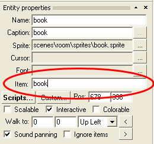

Most adventure games use so-called inventory, i.e. the place where the player character stores all the item he has in his possession. Creating and manipulating the inventory in WME takes several steps, which we will describe in this chapter.
The inventory box defines the design of your inventory window. It can be edited interactively using the WindowEdit tool.
All the inventory items must be defined in a definition file (by default it's called "items.items"). This file has contain a section for each item you'll ever use in your game. The definition looks like this:
ITEM
{
CAPTION = "Item caption"
NAME = "item_name"
SPRITE = "items\normal_image.bmp"
SPRITE_HOVER = "items\hover_image.bmp"
CURSOR = "items\normal_cursor.bmp"
CURSOR_HOVER = "items\hover_cursor.bmp"
CURSOR_COMBINED = TRUE
ALPHA = 255
ALPHA_COLOR { 255, 255, 255 }
TALK = "items\item_talking.sprite"
FONT = "fonts\some.font"
SCRIPT = "items\item.script"
AMOUNT = 100
DISPLAY_AMOUNT = FALSE
AMOUNT_ALIGN = right
AMOUNT_OFFSET_X = 5
AMOUNT_OFFSET_Y = 47
}
Description:
Most of the above attributes are optional. Basically you only need to define NAME and SPRITE, possibly also CAPTION and SCRIPT.
You will need to add a similar section for each of your inventory items to the items definition file.
As you can see, items can hold the information about the amount. This is useful for items like "money", which can use the amount property for storing how much money the player has, or for RPG-style games.
Once we have our inventory box and items defined, we can start using them throughout the game, i.e. in the scripts. Note that all the script methods and attributes discussed in this chapter are described in detail in the Script langue reference.
Taking, dropping, destroying and querying items
You generally reference inventory items by their name. If you want to take an item into inventory, use the Game.TakeItem(), for example:
Game.TakeItem("book");
|
This will add the "book" item into inventory. If you are using multiple inventories, you'll need to call the TakeItem method on the actual object you want to take the item, for example OldGuy.TakeItem("book");
Removing item from inventory works in a similar fashion. Only use the Game.DropItem() method instead:
Game.DropItem("book");
|
This command will remove the item from inventory. Although the inventory item is no longer displayed in the inventory, it may be reused later. If you want to remove the item from the game permanently, use the Game.DeleteItem() method.
You can query a taken item using the Game.GetItem() method. It will return an item object which can be used to set item's attributes.
To query if a certain object is taken by some game object, use the Game.IsItemTaken() method. It will search the inventories of all game objects to see if one of them has the item taken. On the other hand, the game objects provide a HasItem() method, which you can use to ask one concrete object if he has the item.
Example:
// has anyone the book?
var IsBookTaken = Game.IsItemTaken("book");
// has OldGuy the book?
var OldGuyHasBook = OldGuy.HasItem("book");
|
Assigning inventory items to scene objects
It is very common that there are object within the scene, which can be taken. Once taken, they disappear from the scene. It is very easy in WME to connect an inventory item with a scene object. Let's assume we have a scene entity representing book, and an inventory item named "book". Once the item is taken, we want the scene entity to disappear. In SceneEdit, select the entity representing item and look at the properties pane. You'll see an "Item" field there. Simply fill-in the name of the inventory item you want to assign to this entity:

The "book" entity is now assigned to the "book" inventory item. It means that once you call Game.TakeItem("book"); from a script, the entity will automatically disappear. Analogically, once you drop the item using Game.DropItem("book"); the entity will automatically reappear. If you want to permanently remove the item and the entity, just call Game.DeleteItem("book");
Selecting items
If the player selects an inventory item, the mouse pointer will change appropriately. If the item pointer is moved over an interactive object, the item's "hover cursor" is painted, otherwise the "normal cursor" is used (see above). To make an inventory item selected, use the Game.SelectedItem property. To deselect an item, set this attribute to null.
If you don't want the hover effects to be displayed when the mouse pointer is over an object which cannot respond to a currently selected item, set the Game.SmartItemCursor property to true. This property simply checks if the object under mouse can handle an event with the name of the currently selected item. Note that this property only affects the mouse pointer appearance, it doesn't prevent the player from actually using the item on the scene object. This needs to be handled in your game scripts.
Multiple inventories
In WME each object (game, actors, entities) can have its own private inventory. It's mainly useful for games with multiple main characters. In that case you can control whose inventory is currently displayed on screen. This is done by setting the Game.InventoryObject attribute. By default this attribute is set to the Game object, which is just fine for single-inventory games. If you have multiple switching actors you'll want to set this attribute to the current actor.
Querying available inventory items
Sometimes it's useful to be able to traverse through all the inventory items defined in game. The Game.TotalNumItems attribute returns the number of all inventory items (taken or otherwise) and the Game.QueryItem() method allows you to query one specific item. The following code sample traverses through all defined inventory items and displays their name on screen:
for(var i=0; i<Game.TotalNumItems; i=i+1)
{
var Item = Game.QueryItem(i);
Game.Msg(Item.Name);
}
|